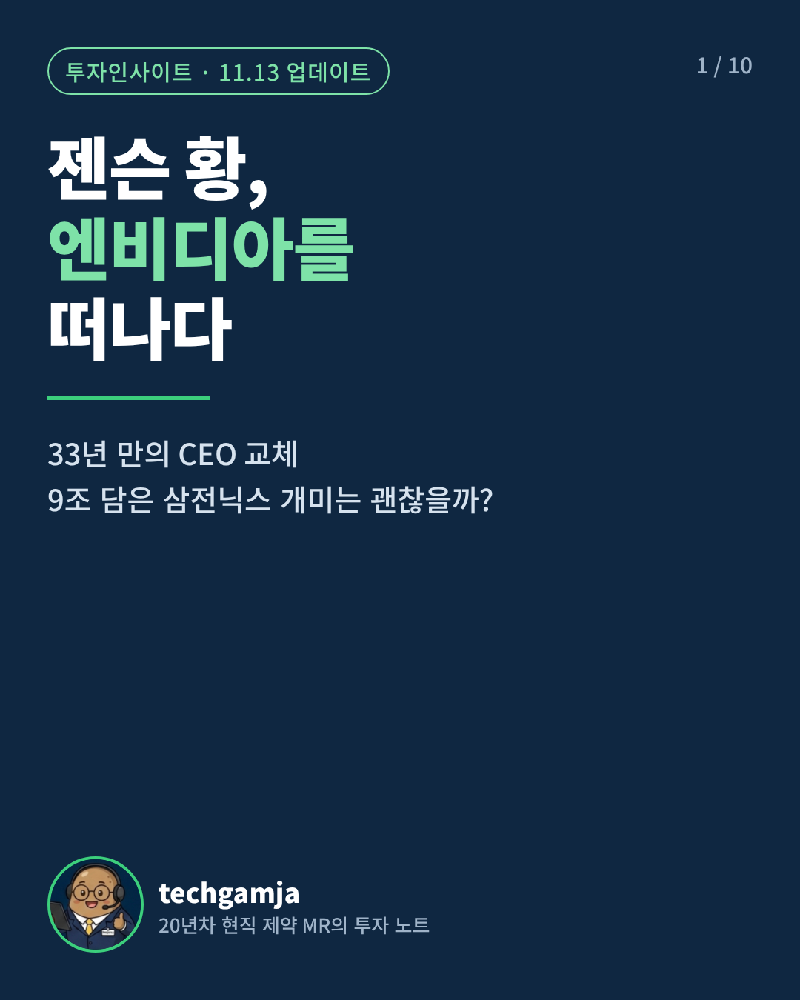
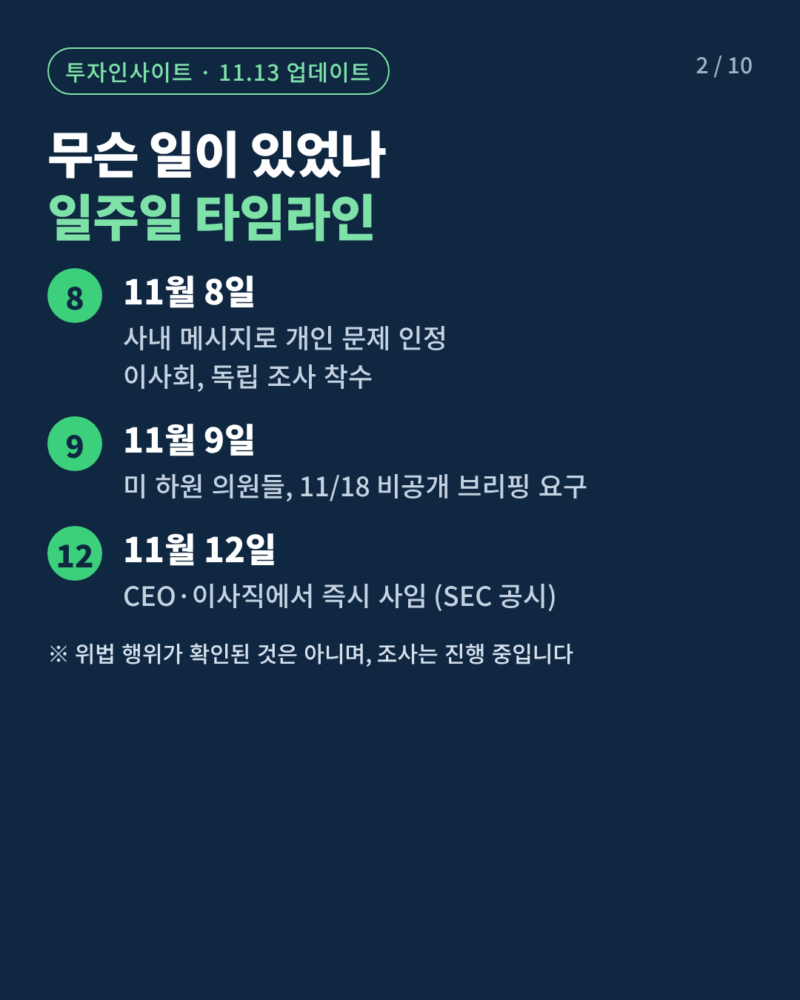
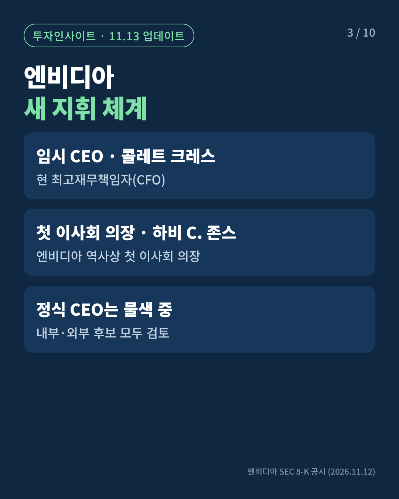
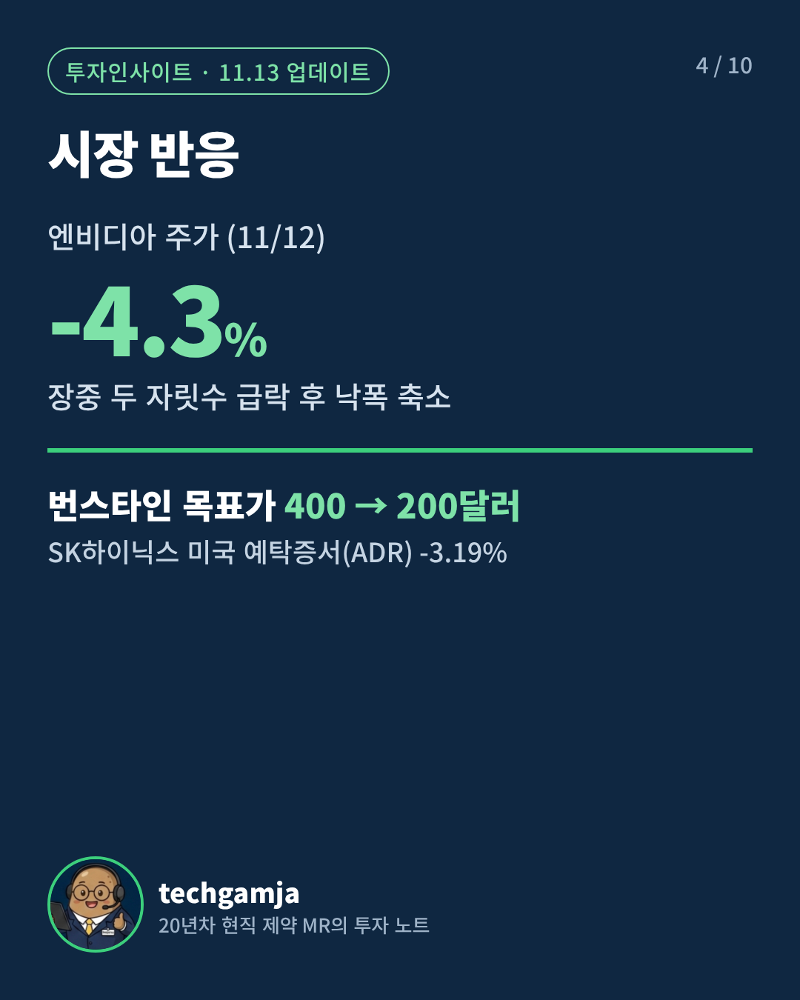
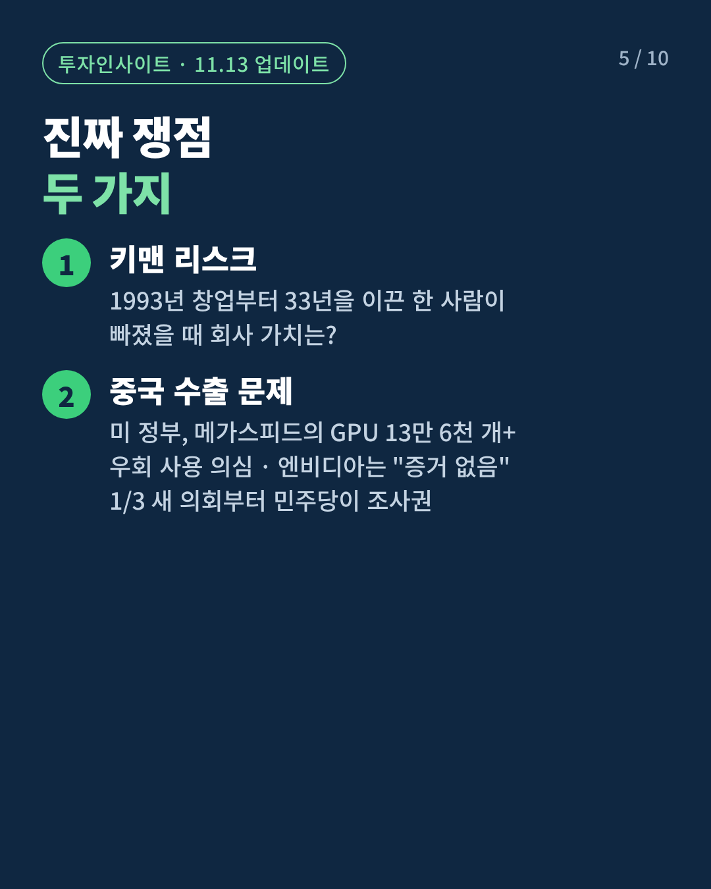
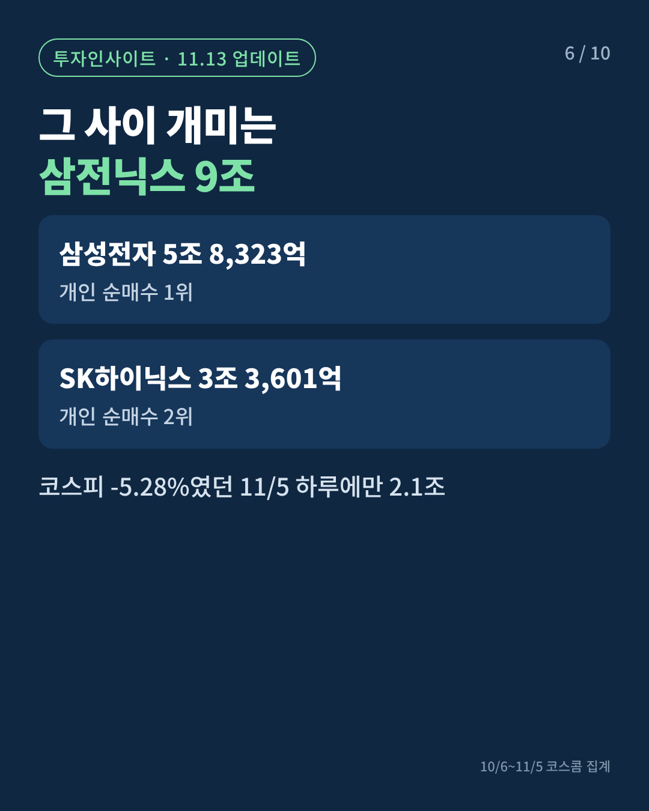
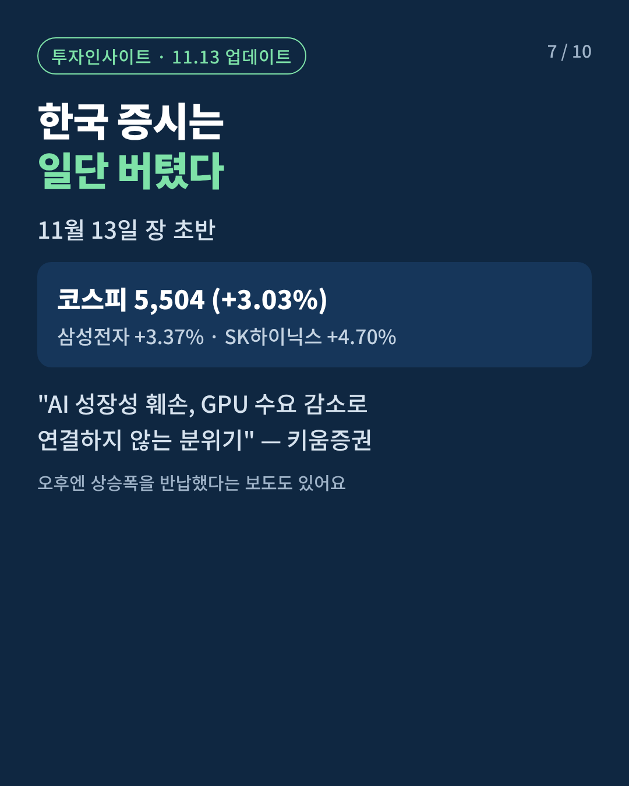
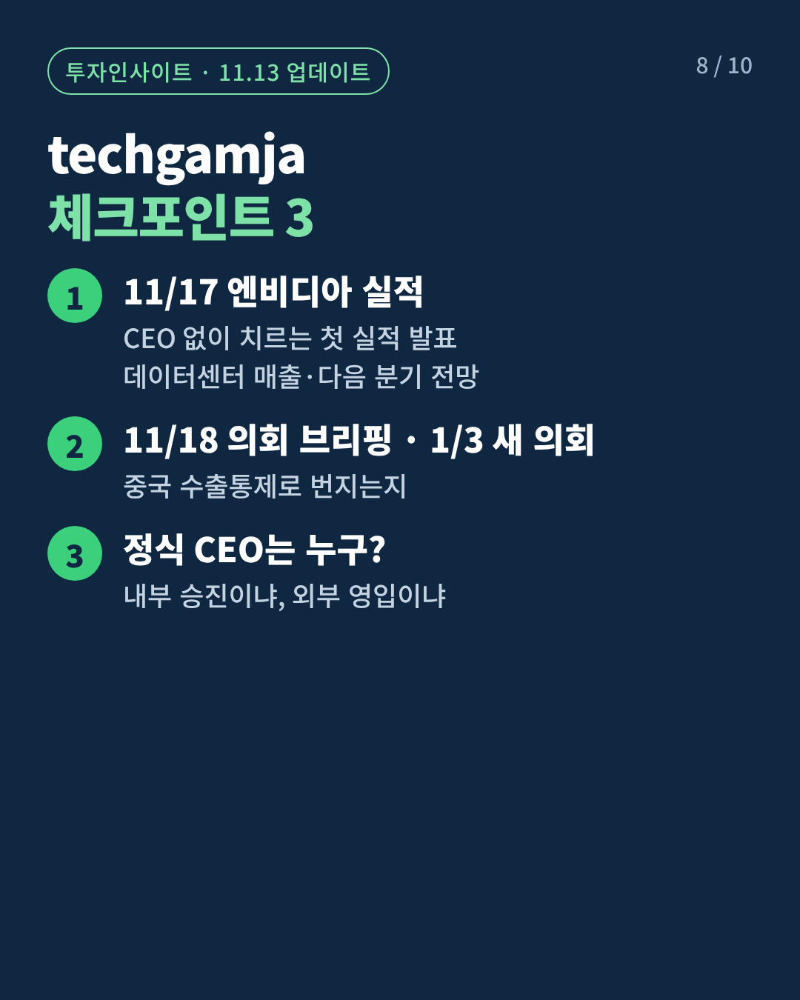
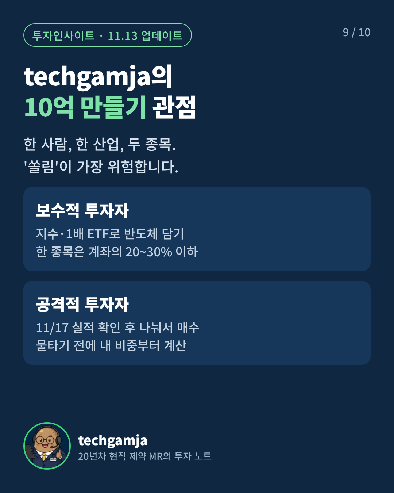
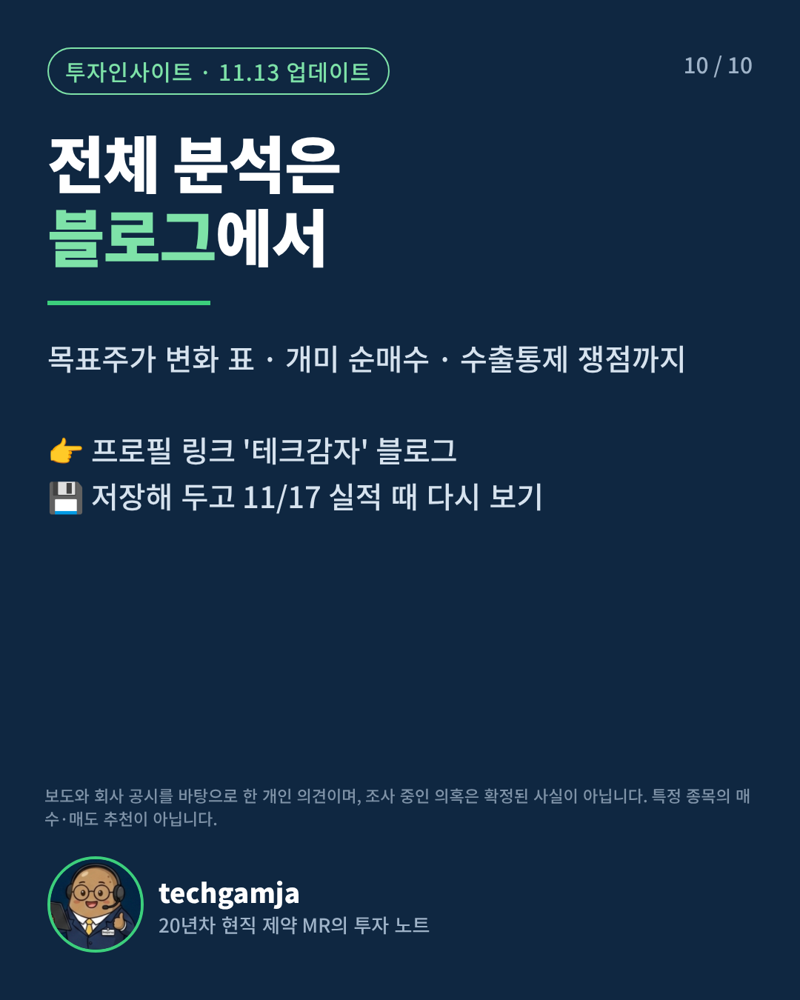

11/12 사임 공시까지 반영한 최신판이에요. 카드뉴스 10장(4:5), 쇼츠 37초(9:16), 캡션·대본, 블로그에 붙일 업데이트 문단까지 들어 있어요.
① 인스타 카드뉴스 10장 · 1080×1350
순서대로 한 게시물에 올리고, 비율은 '세로 방향'을 고르세요.










② 쇼츠·릴스 영상 · 37초
무음 영상이에요. 인스타·유튜브 안의 음악을 얹어 올리세요.
③ 카드뉴스 캡션
젠슨 황이 엔비디아를 떠났습니다 📉
1993년 창업부터 33년을 이끈 CEO의 갑작스러운 사임.
✔ 11/12 CEO·이사직 즉시 사임 (SEC 공시)
✔ 임시 CEO는 콜레트 크레스 CFO
✔ 엔비디아 장중 두 자릿수 급락 → 종가 -4.3%
✔ 그 사이 개미는 삼성전자·SK하이닉스 9조 순매수
진짜 시험대는 11월 17일, CEO 없이 치르는 첫 실적 발표입니다.
📌 카드를 넘겨 보고 저장해 두세요
📖 목표주가 변화 표까지 담은 전체 분석은 프로필 링크 블로그에서
보도와 회사 공시를 바탕으로 한 개인 의견입니다. 조사 중인 의혹은 확정된 사실이 아니며, 특정 종목의 매수·매도 추천이 아닙니다.
젠슨 황이 엔비디아를 떠났습니다 📉
33년 만의 CEO 교체, 37초 요약!
📖 전체 분석은 프로필 링크 블로그에서
💊 20년차 현직 제약 MR의 투자 노트
※ 보도·공시 기반 개인 의견이며 투자 추천이 아닙니다.
#엔비디아 #젠슨황 #반도체 #삼성전자 #SK하이닉스 #미국주식 #주식공부 #재테크 #릴스 #테크감자
⑤ 유튜브 쇼츠 제목·설명
젠슨 황 엔비디아 사임, 33년 만의 CEO 교체… 삼전닉스 개미는? #shorts
엔비디아 젠슨 황 CEO 사임, 임시 CEO 콜레트 크레스. 주가 반응과 11/17 실적 체크포인트를 20년차 현직 제약 MR이 정리했습니다.
전체 분석: 네이버 블로그 '테크감자' https://m.blog.naver.com/techgamja
※ 보도·공시 기반 개인 의견이며 투자 추천이 아닙니다.
#엔비디아 #젠슨황 #반도체 #삼성전자 #SK하이닉스 #테크감자
⑥ 내레이션 대본 (선택)
0:00–0:04
젠슨 황이 엔비디아를 떠났습니다.
0:04–0:09
1993년 창업부터 33년 동안 회사를 이끈 CEO의 갑작스러운 사임입니다.
0:09–0:13
임시 CEO는 최고재무책임자 콜레트 크레스가 맡았습니다.
0:13–0:18
엔비디아 주가는 장중 두 자릿수로 빠졌다가 4.3% 하락으로 마감했고요.
0:18–0:23
번스타인은 목표주가를 400달러에서 200달러로, 딱 절반 낮췄습니다.
0:23–0:28
그 사이 한국 개미들은 한 달 동안 삼성전자와 SK하이닉스를 9조 원 넘게 샀습니다.
0:28–0:32
진짜 시험대는 11월 17일, CEO 없이 치르는 첫 실적 발표입니다.
0:32–0:37
전체 분석은 프로필 링크 블로그에서 확인하세요.
젠슨 황이 엔비디아를 떠났습니다.
1993년 창업부터 33년 동안 회사를 이끈 CEO의 갑작스러운 사임입니다.
임시 CEO는 최고재무책임자 콜레트 크레스가 맡았습니다.
엔비디아 주가는 장중 두 자릿수로 빠졌다가 4.3% 하락으로 마감했고요.
번스타인은 목표주가를 400달러에서 200달러로, 딱 절반 낮췄습니다.
그 사이 한국 개미들은 한 달 동안 삼성전자와 SK하이닉스를 9조 원 넘게 샀습니다.
진짜 시험대는 11월 17일, CEO 없이 치르는 첫 실적 발표입니다.
전체 분석은 프로필 링크 블로그에서 확인하세요.
⑦ 블로그 원고에 붙일 업데이트 문단
아직 블로그에 안 올렸다면 본문 맨 위(인사말 바로 아래)에, 이미 올렸다면 글 수정으로 맨 위에 넣으세요.
[11월 13일 업데이트] 젠슨 황, 엔비디아 CEO 사임
이 글을 쓴 뒤 상황이 크게 바뀌었습니다.
엔비디아는 11월 12일(현지시간) 미국 증권거래위원회(SEC) 공시를 통해 젠슨 황이 CEO와 이사직에서 즉시 물러난다고 밝혔습니다.
▶ 임시 CEO : 콜레트 크레스 최고재무책임자(CFO)
▶ 이사회 의장 : 하비 C. 존스 (엔비디아 첫 이사회 의장)
▶ 정식 CEO : 내부·외부 후보를 모두 놓고 물색 중
엔비디아 주가는 장중 두 자릿수로 급락했다가 4.3% 하락으로 마감했고, 번스타인은 목표주가를 400달러에서 200달러로 절반 낮췄습니다.
반면 11월 13일 코스피는 장 초반 3% 넘게 오르며 5,500선을 터치했고, 키움증권은 "AI 성장성 훼손, GPU 수요 감소로 연결하지 않는 분위기"라고 분석했습니다.
본문 3번 단락의 '키맨 리스크'가 현실이 됐습니다. 이제 남은 질문은 하나입니다.
11월 17일, CEO 없이 치르는 첫 실적 발표에서 숫자가 흔들리느냐입니다.
주의할 점
⚠ 실존 인물 관련 콘텐츠예요. 사생활 내용은 넣지 않았고, 의혹은 "보도", "조사 중"으로만 썼어요. 댓글에서도 단정적인 표현은 피하세요. ⚠ 11/13 코스피 종가는 매체마다 달라서 장 초반 수치만 썼어요. ⚠ 11/17 실적 발표 뒤에는 결과를 담은 후속 카드뉴스를 올리면 유입이 이어져요.